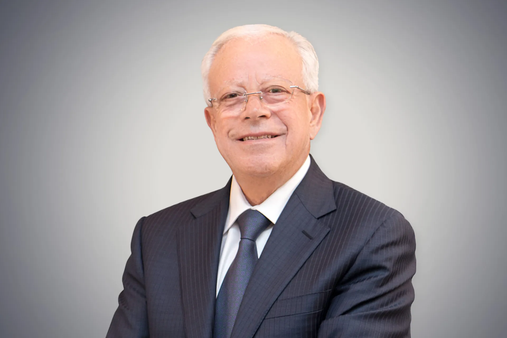
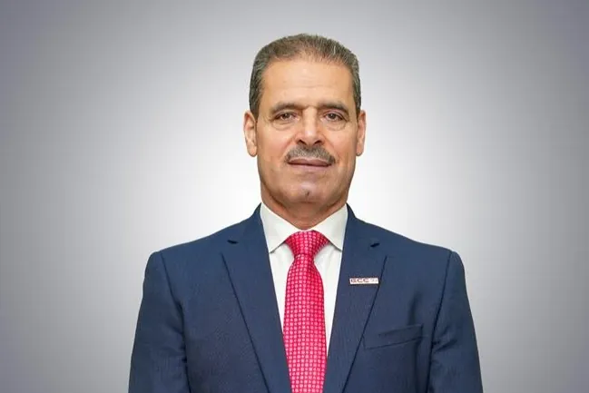
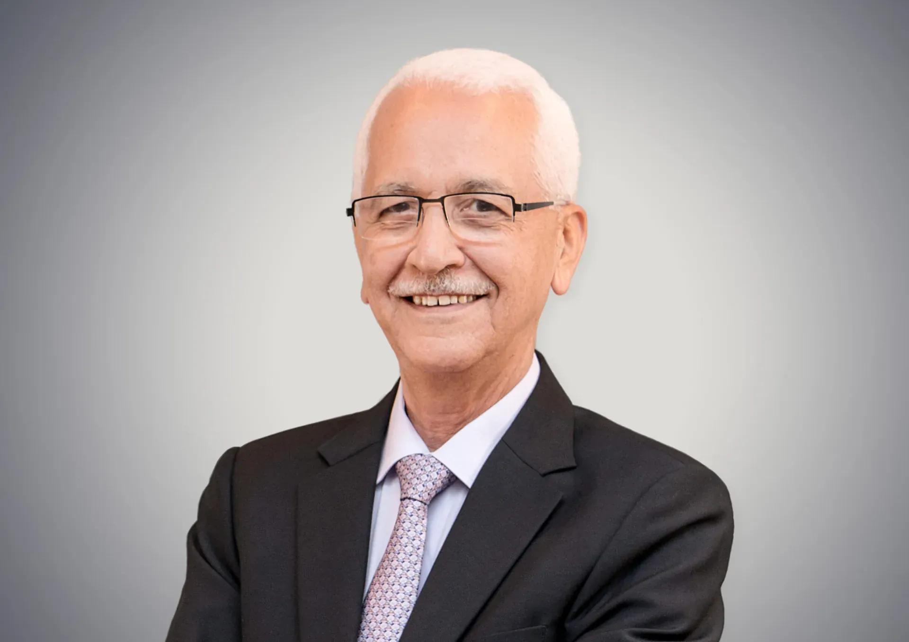
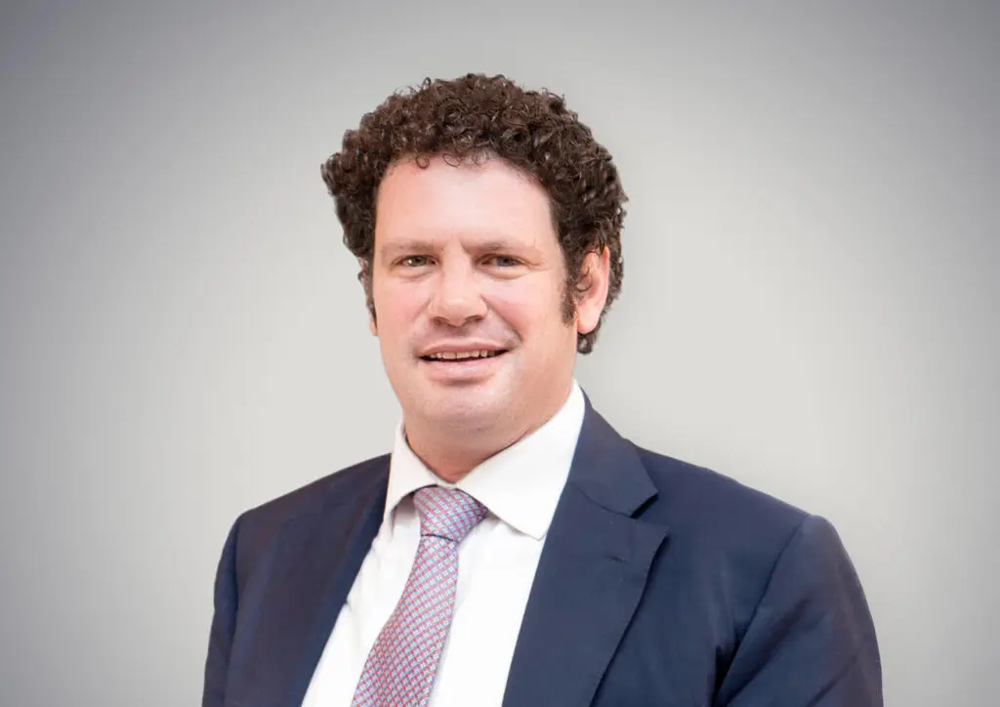
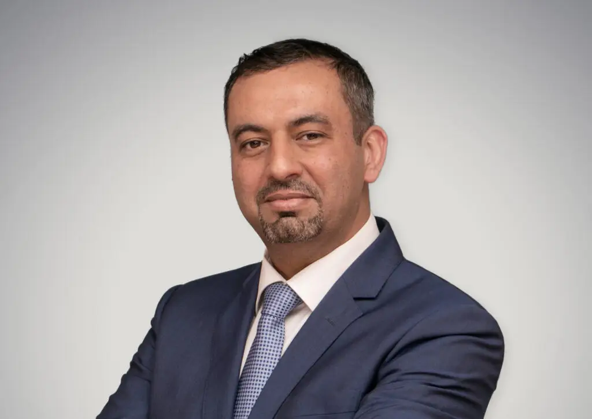
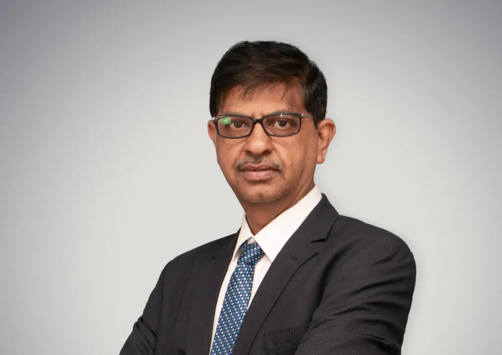

Leadership
Strong projects are led from the front — on the site, not behind a desk.
Leaders Embrace the Future
Since 2006, GS Builder & Engineers has transcended the role of contractor, etching its name as a pioneer in visionary leadership, transformative innovation, and enduring family values.


Board of Directors and Executive Management Team




Integrity, Innovation & Environmental Responsibility
Responsible governance beyond our internal framework
Our commitment to responsible governance extends beyond our internal framework. We actively engage with local communities, participating in industry initiatives and advocating for ethical and sustainable practices throughout the construction sector. We believe that collaboration is key to building a brighter future, and we welcome partners who share our passion for innovation and progress.
Discover More
Contact Us
Ready to Build Smarter?
Tell us about your project — a senior engineer will reply within one working day, and your first consultation is always free.